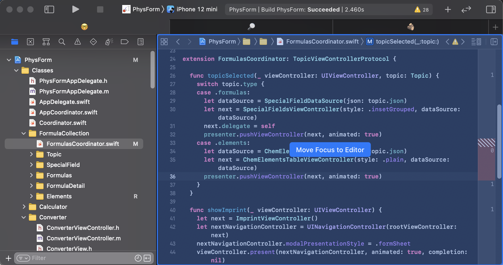
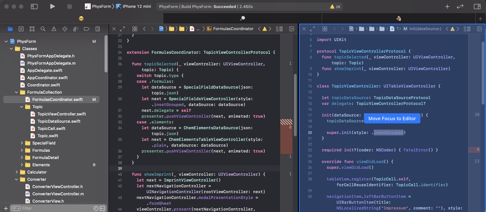

Xcode - Move Focus to Editor
Xcode comes with many keyboard shortcuts that help to navigate within a project or between the different parts of Xcode itself. To become an efficient Xcode user, you should learn how to use Xcode without reaching to the mouse or the track pad. After adding a new file to the project (⌘N) Xcode sets the focus onto the file in the file navigator. To switch the focus to the editor you can use the shortcut ⌘J.
You can use the same shortcut to switch between different editors.
If you have questions or suggestions about this post, please let me know at Twitter: @dasdom.